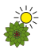
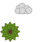
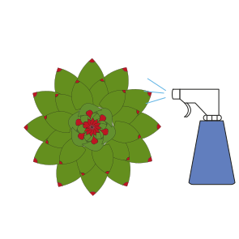
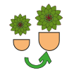
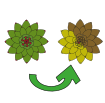

De echevaria komt uit Mexico en werd daar in de 18e eeuw ondekt door Antansio Echeveria
Hier heeft hij dan ook zijn naam aan te danken. De echeveria wordt vaak in het zelfde lijstje
met de cactus gezet maar dat is niet zo, de echeveria is namelijk een vetplant. In Mexico
staat het arme plantje vaak in de brandende zon met weinig water maar daardoor kan hij wel goed
tegen de hitte. Het is dus belangrijk om niet te veel water te geven
Waar moet ie staan dan?

Je echeveria kan lekker in de zon staan, hier is het lekker warm en heeft ie veel
licht die die kan gebruiken. Plaats hem dus lekker in de volle zon (wees niet bang vindt ie lekker).
Door hem in de zon te zetten ga je ook de kans op kluitrot tegen omdat de plant dan meer water
gebruikt. Je kan je plantje berst geregeld verplaatsen maar het beste is als je hem 5 uur per dag
in de volle zon laat staan. Het beste is overdag 22°C en s'nachts 17°C.
Water geven

De echeveria komt dus uit Mexico, hier is hij gewend om niet te veel water te krijgen
dus ook in de woonkamer is het belangrijk dat je het plantje niet te veel water geeft.
De kluit hoeft niet doorweekt te zijn of lang vochtig sterker nog dit kan kluitrot veroorzaken!
Wees dus voortzichtig met de hoeveelheid water, eens in de zoveel tijd is meer dan genoeg.
Sproeien?

Je hoeft je echeveria niet te besproeien. Dit komt omdat de plant de droge Mexicaanse
lucht gewend is. Je kan wel af en toe de bladen afspoelen zodat die beter het zonlicht kan opnemen.
Verpotten

Met de lekker warme zomers en veel zonlicht groeit de echeveria lekker door. Hierdoor
is het aan te raden om elke 3 jaar de plant in een nieuw potje te zetten. De pot moet dan
minimaal 20% groter zijn dan de vorige, hiermee geef je je plantje weer ruimte om nieuwe wortels te groeien.
Dit is het beste als je het in het voorjaar doet, als je dan de wortels beschadigd heeft de
plant genoeg energie om die te herstellen. Meteen water geven na het verpotten hoeft niet,
een paar dagen wachen is het best.
Te eten geven
De echeveria is geen grote eter, daarom is het niet nodig om veel extra voedingsstoffen toe
te voegen. geef je plantje lekker te eten van speciale voedingsstoffen voor cactussen of
gebruik ongeveer 1/4e van universele voeding. Let op dat je niet te veel geeft want dat is
niet goed voor je plant.
Verkleurde bladen

Bruine bladen zijn meestal een teken van te veel water. Geen paniek, dit kan
iedereen overkomen (soms doen ze gewoon kieskeurig), geef je plantjes wat minder water
de komende dagen. Less is more bij de echeveria!. Gele bladen of een gele gloed kan
betekenen dat je plantje te veel zonlicht krijgt. Ja de echevaria kan goed tegen direcht zonlicht
maar hier moet ie wel rustig aan wennen. Zet je plantje een meter verder van het raam en probeer
na een tijdje weer wat dichter bij het raam.